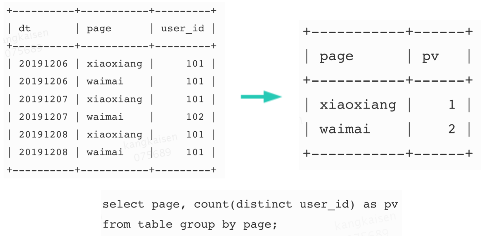
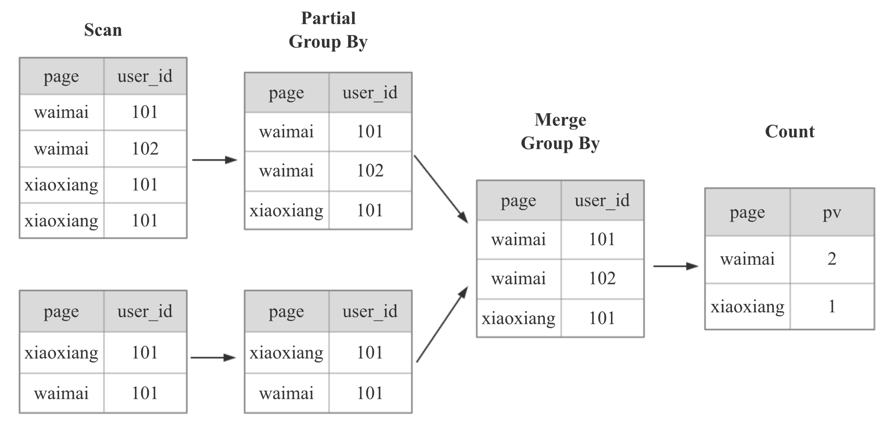
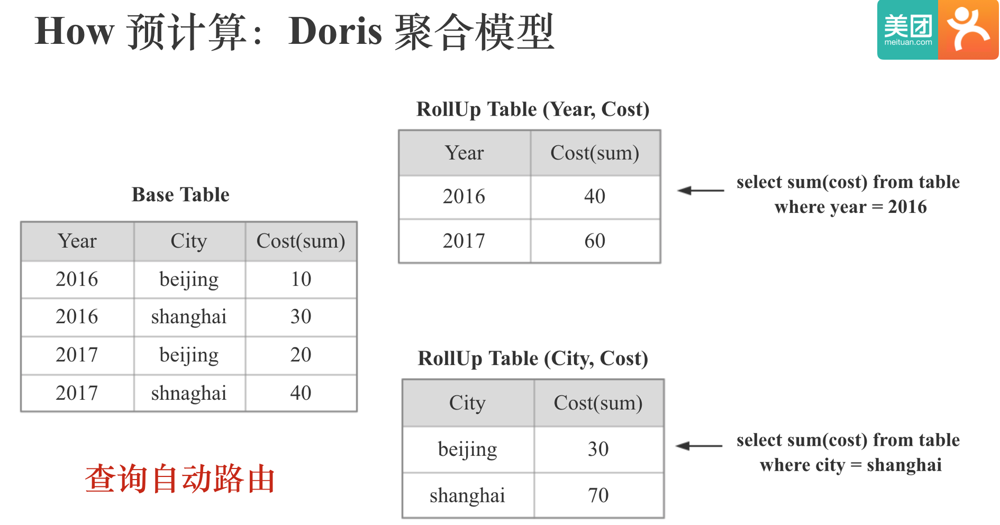
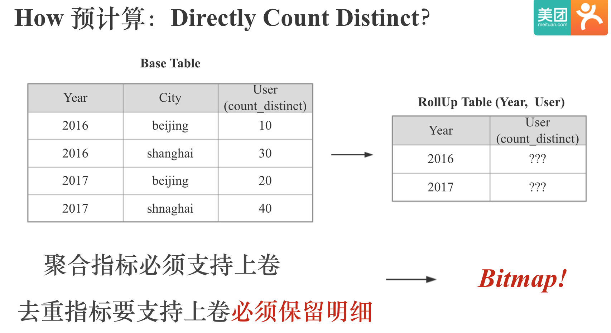
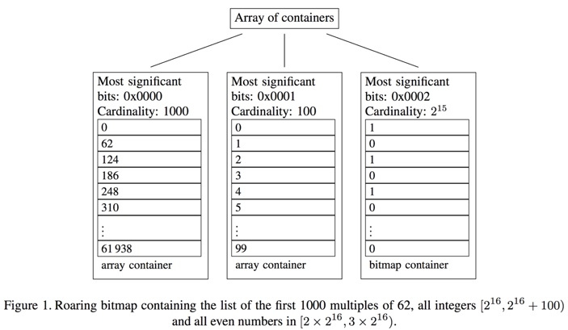
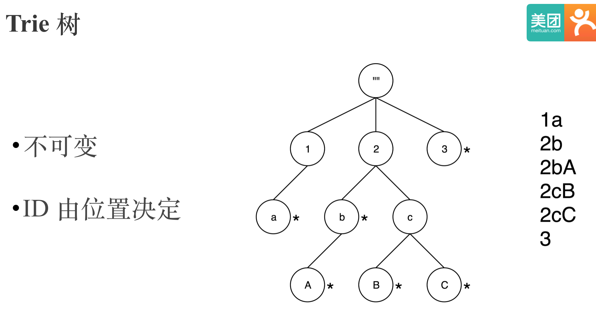
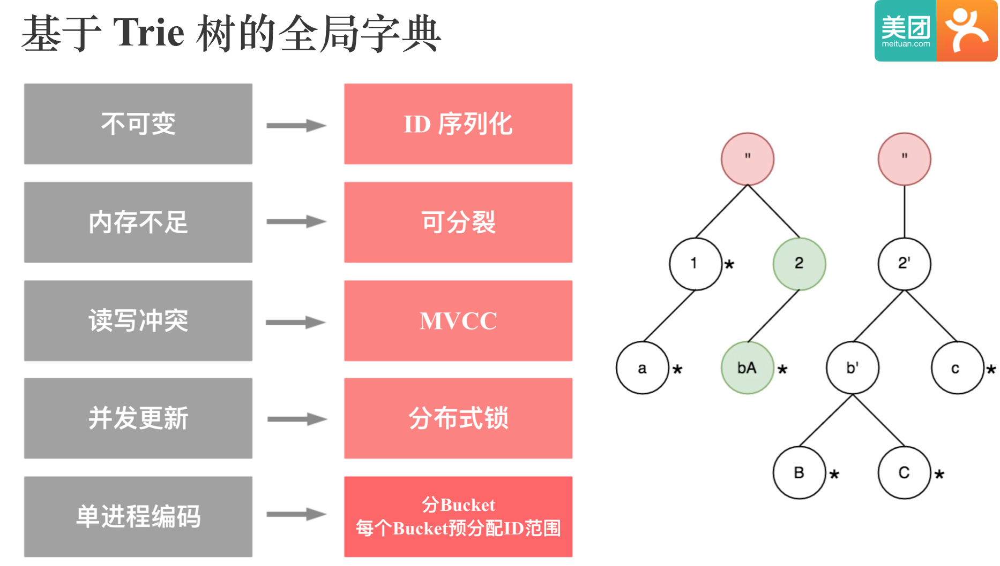
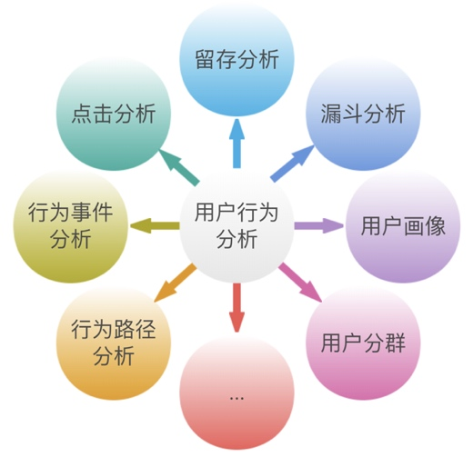

Apache Doris 基于 Bitmap的精确去重和用户行为分析
作者: 康凯森
日期: 2020-01-05
分类: OLAP
- A Store About Bitmap Count Distinct
- Why HLL Is Not Enough
- How Doris Count Distinct Without Bitmap
- How To Make Count Distinct More Faster
- How Doris Count Distinct With Bitmap
- How To Use Doris Bitmap
- User Behavior Analysis Based on Bitmap
- Doris Intersect_count
- Doris Bitmap ToDo
- Summary
- References
本文主要介绍 Apache Doris 基于 Bitmap 的 精确去重和用户行为分析。 我们首先看下基于 Bitmap 的精确去重：
A Store About Bitmap Count Distinct
2016 年 1 月份，我当时是美团点评的实习生，主要做 HBase 这块。 当时我的 mentor 孙叶锐，也是 Kylin 的 PMC，在 Kylin 中实现了 Bitmap 聚合指标，开始只支持 Int 类型，然后在 16 年 5 月份的时候，为了支持任意类型的精确去重，我的 mentor 孙叶锐在 Kylin 中实现了全局字典。
之后大月和我对全局字典做了一次重构，并在全局字典构建方面做了很多优化，在 17 年的时候，我对 Kylin 精确去重查询做了多次优化，整个精确去重查询性能应该有几十倍的提升，对于无需上卷的精确去重查询，性能提升有上百倍。之后实现了全局字典的 MR 构建，Segment 粒度全局字典等优化。
然后在 18 年 1 月份的时候，我整理了 《Apache Kylin 精确去重和全局字典权威指南》 一文，对 Kylin 中的精确去重和全局字典的用法，优化，和原理等进行了比较全面的整理。
18 年初时，我们进行了 ROLAP 系统的调研，并选择了 Doris 进行落地。当初调研完 Doris 的时候，我的初步判断是 只要 Doris 能够支持 Bitmap 精确去重，在大部分场景下基本上可以代替掉 Kylin。只不过一开始我们主要用 Doris 来解决 Kylin 和 Druid 没办法解决的灵活多维分析需求，所以一直没有在 Doris 中引入 Bitmap 精确去重。
一直到今年 2019 年，我们决定进行 OLAP 引擎（Doris,Kylin,Druid）的统一，我们进行了一系列的调研和 POC，最后还是决定用 Doris 代替掉 Kylin 和 Druid。 所以今天下半年开始，我在 Doris 中实现了 Bitmap 精确去重。
Why HLL Is Not Enough
当我们实现一个需求的时候，我们首先要思考的不是如何去实现这个需求， 而是去思考这是不是一个真正的需求，这个需求背后最深层的需求到底是什么。
我们都知道，当数据的规模越来越大，实时性越来越强的时候，在大数据领域普遍都会采用近似算法。 而对去重这一普遍需求的近似实现就是 HLL。 在 Google 的 BigQuery 系统中，对于 Count Distinct 的实现默认就是近似的。
所以海量数据下的秒级精确去重到底是不是必须的？ 经过这几年和公司很多用户的多次沟通交流，这个结论显然是是必须的的。 为什么呢？ 因为当和金钱，业绩相关时，用户是没法接受近似的情况的。 比如说，你的推荐算法辛辛苦苦优化了 5%，结果直接被近似掉了，你显然是不能接受的。
How Doris Count Distinct Without Bitmap
我们知道，Doris 除了支持 HLL 近似去重，也是支持 Runtime 现场精确去重的。实现方法和 Spark，MR 类似。

对于上图计算 PV 的 SQL，Doris 在计算时，会按照下图进行计算，先根据 page 列和 user_id 列 group by,最后再 count。
 （图中是 6 行数据在 2 个 BE 节点上计算的示意图）
显然，上面的计算方式，当数据量越来越大，到几十亿，几百亿时，使用的 IO 资源，CPU 资源，内存资源，网络资源就会越来越多，查询也会越来越慢。
那么，下面一个自然而然的问题就是，我们应该如何让 Doris 的精确去重查询性能更快呢？
How To Make Count Distinct More Faster
- 堆机器
- Cache
- 优化 CPU 执行引擎 (向量化，SIMD，查询编译等)
- 支持 GPU 执行引擎
- 预计算
第一种最容易想到的解法就是堆机器，因为 Doris 是 MPP 的架构，大多数算子的性能都是可以随着集群规模线性提升的。 这种解法适合不差钱的土豪公司。
第二种也很容易想到的解决就是 Cache，Cache 在应用层和数据库层都可以做，但是 Cache 的问题是无法加速首次查询，而且在维度组合很灵活的情况下，Cache 的命中率会很低。
第三种就是我们去优化查询执行器的性能，比如内存存储，向量化执行，SIMD 指令加速，查询编译，以及数据结构和算法本身的优化等等，ClickHouse 便是这种思路的代表。
第四种就是用 GPU 加速，我们知道，GPU 适合计算密集应用，而且目前 CPU 的性能提升速度已经比较缓慢，但是 GPU 的性能提升速度却十分迅速。 从一些公开测试和我之前做过的 Demo 测试来看，GPU 执行器的性能会在 CPU 执行器性能的几十，上百倍。
第五种就是今天要分享的主题，预计算，就是空间换时间，也是 Kylin, Druid 和 Doris 聚合模型的核心思路，就是将计算提前到数据导入的过程中，减少存储成本和查询时的现场计算成本。
How Doris Count Distinct With Bitmap
我们要在 Doris 中预计算，自然要用到 Doris 的聚合模型，下面我们简单看下 Doris 中的聚合模型：

Doris 的聚合模型分为 Key 列和 Value 列，Key 列就是维度列，Value 列是指标列，Key 列全局有序，每个 Value 列会有对应的聚合函数，相同 Key 列的 Value 会根据对应的聚合函数进行聚合。 上图中，Year，City 是 Key 列，Cost 是 Value 列，Cost 对应的聚合函数式 Sum。 Doris 支持根据不同维度组合建立不同的 Rollup 表，并能在查询时自动路由。
所以要在 Doris 中实现 Count Distinct 的预计算，就是实现一种 Count Distinct 的聚合指标。那么我们可以像 Sum,Min,Max 聚合指标一样直接实现一种 Count Distinct 聚合指标吗?

我们知道，Doris 中聚合指标必须支持上卷。例如原始 Base 表里有 Year 和 City 两个维度列，我们可以计算出每年每个 City 的去重 User 值。但如果我们只保留每个 City 的 User 的去重值，就没办法上卷聚合出只有 Year 为维度的时候 User 的去重值，因为去重值不能直接相加，我们已经把明细丢失了，我们不知道在 2016 或 2017 年，北京和上海不重合的 User 有多少。
所以去重指标要支持上卷聚合，就必须保留明细，不能只保留一个最终的去重值。 而我们知道计算机保留信息的最小单位是一个 bit，所以我们很自然的想到用 Bitmap 来保留去重指标的明细数据。

当使用 Bitmap 之后，之前的 PV 计算过程会大幅简化，现场查询时的 IO,CPU,内存，网络资源会显著减少，并且不再会随着数据规模线性增加。
但是直接使用原始的 Bitmap 会有两个问题，一个是内存和存储占用，一个是 Bitmap 输入只支持 Int 类型。解决内存和存储占用的思路就是压缩，业界普遍采用的 Bitmap 库是 Roaring Bitmap；解决任意类型输入的思路就是将任意类型映射到 Int 类型，为此我们引入了全局字典。
Roaring Bitmap 的核心思路很简单，就是根据数据的不同特征采用不同的存储或压缩方式。 为了实现这一点，Roaring Bitmap 首先进行了分桶，将整个 int 域拆成了 2 的 16 次方 65536 个桶，每个桶最多包含 65536 个元素。 所以一个 int 的高 16 位决定了，它位于哪个桶，桶里只存储低 16 位。以图中的例子来说，62 的前 1000 个倍数，高 16 位都是 0，所以都在第一个桶里。

然后在桶粒度针对不同的数据特点，采用不同的存储或压缩方式：

默认会采用 16 位的 Short 数组来存储低 16 位数据，当元素个数超过 4096 时，会采用 Bitmap 来存储数据。 为什么是 4096 呢？ 我们知道， 如果用 Bitmap 来存，65526 个 bit, 除以 8 是 8192 个字节，而 4096 个 Short 就是 4096 * 2 = 8192 个字节。 所以当元素个数少于 4096 时，Array 存储效率高，当大于 4096 时，Bitmap 存储效率高。
第 3 类 Run Container 是优化连续的数据， Run 指的是 Run Length Encoding（RLE），比如我们有 10 到 1000 折连续的 991 个数字，那么其实不需要连续存储 10 到 1000，这 991 个整形，我们只需要存储 1 和 990 这两个整形就够了。
在做字典映射时，使用比较广泛的数据结构是 Trie 树。Trie 树又叫前缀树或字典树。叫前缀树，是因为某节点的后代存在共同的前缀，比如图中的 2cb 和 2cc 的前缀是 2c。叫字典树，是因为 Trie 树是一种专门处理字符串匹配的数据结构，用来解决在一组字符串集合中快速查找某个字符串的问题。Trie 树利用字符串的公共前缀来减少查询时间，最大限度地减少无谓的字符串比较，查询效率比哈希树高。所以 Trie 树很适合用来实现字典编码，因为它的存储和检索效率都很高。
Trie 树的问题是字典对应的编码值是基于节点位置决定的，所以 Trie 树是不可变的。 这样没办法用来实现全局字典，因为要做全局字典必然要支持追加。

要实现全局字典，Trie 树必然要支持可追加，在可追加的情况下，我们需要解决如何让同一个 String 永远映射到同一个 ID。一个简单的思路是我们把 String 对应的 ID 直接序列化下来，因为全局字典只需要支持 String 到 ID 的单向查找，不需要支持 ID 到 String 的反向查找。
当全局字典越来越大的时候，就会面临内存不足的问题。一个自然的想法就是 Split, 如图所示。当全局字典拆成多个子树之后，必然会涉及到每个子树的按需加载和删除，这个功能是使用 Guava 的 LoadingCache 实现的。
为了解决读写冲突的问题，我们实现了 MVCC，使得读写可以同时进行。 全局字典目前是存储在 HDFS 上的，一个全局字典目录下会有多个 Version，读的时候永远读取最新 Version 的数据，写的时候会先写到临时目录，完成后再拷贝到最新的 Version 目录。 同时为了保证全局字典的串行更新，我们引入了分布式锁。
目前基于 Trie 树的全局字典存在的一个问题是，全局字典的编码过程是串行的，没有分布式化，所以当全局字典的基数到几十亿规模时，编码过程就会很慢。 一个可行的思路是，类似 Roaring Bitmap，我们可以将整个 Int 域进行分桶，每个桶对应固定范围的 ID 编码值，每个 String 通过 Hash 决定它会落到哪个桶内，这样全局字典的编码过程就可以并发。 
正是由于目前基于 Trie 树的全局字典 无法分布式构建，滴滴的同学引入了基于 Hive 表的全局字典。

这种方案中全局字典本身是一张 Hive 表，Hive 表有两个列，一个是原始值，一个是编码的 Int 值，然后通过上面的 4 步就可以通过 Spark 或者 MR 实现全局字典的更新，和对事实表中 Value 列的替换。
基于 Hive 表的全局字典相比基于 Trie 树的全局字典的优点除了可以分布式化，还可以实现全局字典的复用。 但是缺点也是显而易见，相比基于 Trie 树的全局字典，会使用多几倍的资源，因为原始事实表会被读取多次，而且还有两次 Join。
How To Use Doris Bitmap
1 Create Table （为了有更好的加速效果，最好建下 ROLLUP）
CREATE TABLE `pv_bitmap` (
`dt` int,
`page` varchar(10),
`user_id` bitmap bitmap_union
)
AGGREGATE KEY(`dt`, page)
DISTRIBUTED BY HASH(`dt`) BUCKETS 2;
ALTER TABLE pv_bitmap ADD ROLLUP pv (page, user_id);
2 Load Data
cat data | curl --location-trusted -u user:passwd -T -
-H "columns: dt,page,user_id, user_id=$BITMAP_LOAD_FUNCTION(user_id)"
http://host:8410/api/test/pv_bitmap/_stream_load
TO_BITMAP(expr) : 将 0 ~ 4294967295 的 unsigned int 转为 bitmap
BITMAP_HASH(expr): 将任意类型的列通过 Hash 的方式转为 bitmap
BITMAP_EMPTY(): 生成空 bitmap，用于 insert 或导入的时填充默认值
3 Query
select bitmap_count(bitmap_union(user_id)) from pv_bitmap;
select bitmap_union_count(user_id) from pv_bitmap;
select bitmap_union_int(id) from pv_bitmap;
BITMAP_UNION(expr) : 计算两个 Bitmap 的并集，返回值是序列化后的 Bitmap 值
BITMAP_COUNT(expr) : 计算 Bitmap 的基数值
BITMAP_UNION_COUNT(expr): 和 BITMAP_COUNT(BITMAP_UNION(expr)) 等价
BITMAP_UNION_INT(expr) : 和 COUNT(DISTINCT expr) 等价 (仅支持 TINYINT,SMALLINT 和 INT)
4 Insert Into （可以加速无需上卷的精确去重查询场景）
insert into bitmap_table1 (id, id2) VALUES (1001, to_bitmap(1000)), (1001, to_bitmap(2000));
insert into bitmap_table1 select id, bitmap_union(id2) from bitmap_table2 group by id;
insert into bitmap_table1 select id, bitmap_hash(id_string) from table;
下面我们来看下基于 Bitmap 的用户行为分析
User Behavior Analysis Based on Bitmap
用户行为分析从字面意思上讲，就是分析用户的行为。分析用户的哪些行为呢？ 可以简单用 5W2H 来总结。即 Who(谁)、What(做了什么行为)、When(什么时间)、Where(在哪里)、Why(目的是什么)、How(通过什么方式)，How much (用了多长时间、花了多少钱)。

为什么要做用户行为分析呢? 其终极目的就是为了不断优化产品，提升用户体验，让用户花更多的时间，花更多的钱在自己的产品上。
图中列出了常见的用户行为模型，比如留存分析，是指用户在某段时间内开始使用应用，经过一段时间后，仍然继续使用该应用的用户，被认作是该应用的留存用户。比如某应用某天新增用户 1 万人，然后低二天只有 5 千人打开过应用，那么日留存就是 50%。
还有漏斗分析，最常见的就是一个转换漏斗，就是从展现页开始，有多少人会点击，进而有多少人会访问，最后又多少人会咨询和下单，这里面每一步的人数都会减少，用图画出来的话，刚好就是一个漏斗的形状。
还有点击分析，就是可以根据用户在整个页面的点击浏览，情况，知道哪些图片，广告是设置合理的，哪些是有问题的，进而进行改进。 比如双 11 京东，天猫的首页，每个图片怎么放置，决定不是随便放的，背后肯定是有数据支撑的。
剩下的就不一一介绍了。大家需要注意一点，目前我们数据库是可以回答用户行为 What 和 Why 的问题，而和机器学习结合后，我们是可以直接进行预测用户行为的。
目前用户行为分析的解法大概有这么几种：
第一种就数据库的 Join 解法，一般效率是比较低的。 我们在 Doris 中是可以用这种思路实现的。
第二种是基于明细数据的，UDAF 实现。Doris 也是支持的。
第三种是基于 Bitmap 的 UDAF 实现的，也就是今天要分享的。
第四种是用专用的系统来做用户行为分析，专用系统的好处是可以针对特定场景，做更多的优化。
而且在专用系统里，很多公司也采用了基于 Bitmap 的方案，原因是我们可以用 1 个 bit 位表示一个用户，那么 Bitmap 的交，并，差，对称差集等运算都可以和大多数用户行为模型对应起来，并且 Bitmap 的交，并，差，对称差集运算可以借助 SIMD 指令加速，是很高效的。比如， 去重用户就是 Bitmap 取 1 的个数，活跃用户就是两个 Bitmap 取并集，重度用户，留存用户，转换可以是两个 Bitmap 取交集，新增用户可以是 Bitmap 取差集等等。
Doris Intersect_count
由于我们现在已经在 Doris 的聚合模型中支持了 Bitmap，所以我们便可以基于 Bitmap 实现各类 UDF, UDAF，来实现大多数用户行为分析。
目前，我们首先在 Doris 中实现了求交集的 UDAF intersect_count，这个 UDAF 的定义是参考 Kylin 的，主要是为了支持 Kylin 的应用可以迁移到 Doris 中来。intersect_count 的第一个参数是 Bitmap 列，第二个参数是用来过滤的维度列， 第三个参数开始是变长参数，含义是过滤维度列的不同取值。intersect_count 整个函数的功能就是计算满足 filter_column 过滤条件的多个 Bitmap 的交集的基数值。前面提到过，Bitmap 交集可以用来计算留存，漏斗，用户画像，下面我们来具体看一下。
Intersect_count 计算留存
select intersect_count(user_id, dt, '20191111') as first_day,
intersect_count(user_id, dt, '20191112') as second_day,
intersect_count(user_id, dt, '20191111', '20191112') as retention,
from table
where dt in ('20191111', '20191112')
例如，假设我们有 user_id 和 dt 列，前两行相当于计算了这两天的去重用户数，第三行计算的是 20191111 和 20191112 这两天用户的交集，相除便即可计算出两天的留存率。
Intersect_count 计算漏斗
select intersect_count(user_id, page, 'meituan') as meituan_uv,
intersect_count(user_id, page, 'waimai') as waimai_uv,
intersect_count(user_id, page, 'meituan', 'waimai') as retention
from visit_log
where page in ('meituan', 'waimai');
假如我们有 user_id 和 page 的信息，我们希望知道在访问美团页面之后，又有多少用户访问了外卖页面，也可以用 intersect_count 来进行计算。
Intersect_count 筛选特定用户
select
intersect_count(user_id, tag_value, ' 男 ', '90 后 ', '10-20 万 ')
from user_profile
where (tag_type=' 性别 ' and tag_value=' 男 ')
or (tag_type=' 年龄 ' and tag_value='90 后 ')
or (tag_type=' 收入 ' and tag_value='10-20 万 ')
最后我们也可以通过 intersect_count 来进行一些特定用户的筛选。例如原始表里有 user_id，tag_value，tag_type 这些信息，我们想计算年收入 10-20 万的 90 后男性有多少，就可以用这个简单的 SQL 来实现。
Doris Bitmap ToDo
1 全局字典进行开源，支持任意类型的精确去重
2 支持 Int64，支持 Int64 后一方面支持更高基数的 bitmap 精确去重，另一方面如果原始数据中有 bigint 类型的数据便不需要全局字典进行编码。
3 支持 Array 类型。很多用户行为分析的场景下的 UDAF 或 UDF，用 Array 表达更加方便和规范。
4 更方便更智能的批量创建 Rollup。当用户基数到达十多亿时，Bitmap 本身会比较大，而且对几十万个 Bitmap 求交的开销也会很大，因此还是需要建立 Rollup 来进行加速查询。更进一步，我们期望可以做到根据用户的查询特点去自动建立 Rollup。
5 希望支持更多、更复杂的用户行为分析。
Summary
如果应用基数在百万、千万量级，并拥有几十台机器，那么直接选择 count distinct 即可；
如果应用基数在亿级以上并可以近似去重，那么选择 HLL 或 Bitmap 均可；
如果应用基数在亿级以上并需要精确去重，那么选择 Bitmap 即可；
如果你希望进行用户行为分析，可以考虑 IntersectCount 或者自定义 UDAF。
References
Use Hive to build global dictionary